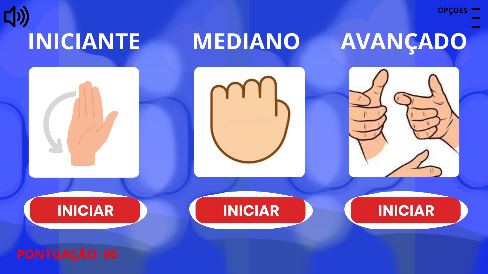

Criado por Débora – desenvolvedora do jogo Articule Livre
Projeto Stelas
O Articule Livre é um aplicativo desenvolvido dentro da plataforma Stelas, criado com foco em pessoas que convivem com desconfortos decorrentes de movimentos repetitivos. O app oferece uma experiência simples, acessível e intuitiva, guiando o usuário em exercícios visuais e auditivos que estimulam a mobilidade saudável das mãos.
O Articule Livre funciona como um mini-programa interativo dentro do aplicativo, simulando um conjunto de atividades progressivas que estimulam a articulação das mãos. Ele combina áudio, animações simples e movimentos guiados para facilitar a compreensão do usuário, mesmo sem experiência prévia com exercícios terapêuticos.
O módulo inclui:
O jogador acompanha movimentos simples como abrir e fechar a mão, girar os punhos e alongar os dedos.
Objetivo: preparar articulações e reduzir tensão.
Ponto recebido: Flexibilidade InicialO jogador segue movimentos apresentados na tela, de forma lenta, repetitiva e segura.
Objetivo: melhorar coordenação e fluidez.
Ponto recebido: Coordenação CorporalA tela indica direções (cima, baixo, esquerda, direita) e o jogador executa com as mãos.
Objetivo: ativação muscular e aumento da amplitude.
Ponto recebido: Amplitude e AlcanceSons e luzes marcam o ritmo dos exercícios. O jogador deve acompanhar o tempo.
Objetivo: controle motor, precisão e tempo de reação.
Ponto recebido: Controle MotorVídeos e áudios guiam o relaxamento das mãos e braços, com respiração e alongamentos leves.
Objetivo: reduzir dores e prevenir tensão.
Ponto recebido: Bem-Estar e Recuperação
A primeira pessoa a utilizar o Articule Livre no REABNET é Débora, 19 anos, que sofre com dores na mão causadas por movimentos repetitivos no seu dia a dia.
Morando no interior, ela enfrenta dificuldade para acessar serviços de saúde presenciais, além de possuir uma conexão de internet limitada. Por isso, o aplicativo se tornou uma alternativa prática e acessível.
Por meio do Articule Livre, Débora consegue realizar exercícios guiados que ajudam a aliviar a dor, melhorar a mobilidade e fortalecer gradualmente a mão e o punho — tudo no ritmo dela e com segurança.